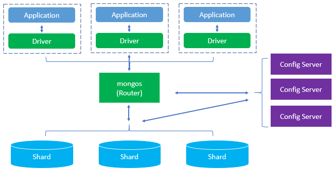

MongoDB - The Complete Guide
Table of Contents
What is MongoDB?
It’s an open-source NoSQL database, developed for high performance, high availability, and easy scalability. Collection and document are the two primarily used terms/concepts in MongoDB. Here, Collection is referred to a group of these documents, which is like an RDBMS table.

Figure 1: Collection
Definition
These are a NoSQL database, which is cross-platform document-oriented. It uses BSON format for document storage and communication with its client. BSON is a binary form of JSON.
Let’s see some basic difference between MongoDB and RDBMS:
| Difference Between MongoDB and RDBMS | RDBMS | MongoDB |
|---|---|---|
| Schema | Fixed Schema | Schema-less |
| Transactions | Supports transactions | Compromises on transactions, by giving high availability and partitioning. |
| Sharding | No | Yes |
| Query Caching | No query caching here | Query caching happens here, which leads to a faster access to data. |
Understanding
Let’s understand the core of MongoDB. It works on an extended version of JSON kn0wn as BSON (Binary JSON), which is:
- Lightweight
- Traversable
- Efficient
These drivers are responsible for sending and receiving data in BSON format. It stores the data as a BSON Object. Encoding to BSON and Decoding to BSON again happens very quickly, and so it’s so efficient. Here are a few terms related to MongoDB, which is used while using it. Let’s get familiar with that:
- Collection: Its group of MongoDB documents. This can be thought similar to a table in RDBMS like Oracle, MySQL. This collection doesn’t enforce any structure. Hence schema-less MongoDB is so popular.
- Document: Document is referred to as a record in MongoDB collection.
- Field: It is a name-value pair in a document. A document has zero or more fields. Fields are like columns in relational databases.

Figure 2: Collection Hierarchy
How does MongoDB make working so easy?
- MongoDB is based on the schema-less format for data storage and BSON format for communicating with its client, it manages and innovatively stores the data. With increased internet access, the world has drifted towards more heavy traffic flow which can be unmanageable. MongoDB is very much capable of handling heavy traffic flow for all websites and applications with ease.
- It is based on sharding concept. It relies on vertical scaling, where you need to add more CPU and memory with the increasing demand for processing power. Here one can use more than one server to fulfil the requirement of processing power. It follows the principle of the distributed system.
- It uses internal memory for storing the working data sets, enabling faster access to the data. It also Optimizes your schema for most frequent use cases.
- It has a rich set of queries for performing fast and easy operations.
Advantages
- Easy on Use: This easy to install and setup makes it outstanding from its other document-based NoSQL database. Plus, no more good coding background is required. You should know JSON to understand the tree structure of collection here.
- No Complex Joins: MongoDB is based on BSON format – key-value pair, hence no complex joins here.
- Many Supported Platform: MongoDB supports wide varieties of platforms: Windows, Ubuntu, Debian, Solaris, macOS. This makes it very popular among developers.
- Agility: With quickly evolving needs of requirement, the flexible data model is needed to address all those. A fixed schema-based data model can’t address that all, schema-less data model MongoDB makes itself popular because of its ability to scale and its highly dynamic nature. It’s exceptionally easy to add or change fields in MongoDB.
- Faster Access to Data: Due to its nature of using the storage’s internal memory, it provides fast access to the data.
Horizontal Scaling: It relies on horizontal and not on vertical scaling like RDBMS. The expense gets reduced, as no CPU and memory needs to be added on the same server. One can utilize more server with more processing requirements. This not only reduces cost expenses of CPU, memory addition but also reduces the maintenance cost.

Figure 3: Horizontal Scaling
Course Structure
- Introduction
- Understanding the Basics & CRUD Operations
- Schemas & Relations: How to structure Documetns
- Exploring the Shell & The Server
- Using the MongoDB Compass to Explore Data Visually
- Diving Into Create Operations
- Read Operations - A Closer Look
- Update Operations
- Understanding Delete Operations
- Working with Indexes
- Working with Geospatial Data
- Understanding the Aggregation Framework
- Working with Numeric Data
- MongoDB & Security
- Performance, Fault Tolerancy & Deployment
- Transactions
- From Shell to Driver
- Introducing Stitch
Useful Resources and Links
- Mongo Docs
- MongoDB Drivers
- Schema Validation
- Data Type Limits
- Suported Types
- Config Files
- Shell (mongo) Options
- Server (mongod) Options
- InsertOne() Method
- InsertMany() Method
- Atomicity
- Write Concern
- Using mongoimport
- find()
- Cursors
- Query Operator Reference
- Updating Documents
- Deleting Documents
- partialFilterExpressions
- Supported defaultlanguages
- Different Languages in the same index
- GeoSpatial Documents
- Geospatial Query Operators
- Aggregation Framework Documentation
- $cond
- Float vs Double vs Decimal - A Discussion on Precision
- Number Ranges
- Modelling Number/ Monetary Data in MongoDB
- Official “Encryption at Rest” Docs
- Official Security Checklist
- What is SSL/ TLS?
- Official MongoDB SSL Setup Docs
- Official MongoDB Users & Auth Docs
- Official Built-in Roles Docs
- Official Custom Roles Docs
- Official Documentation on Replica Sets
- Official Documentation on Sharding
- Transactions
- Official Stitch Docs
- Complete Stitch Username + Password Auth Flow
- Stitch Services (AWS S3)